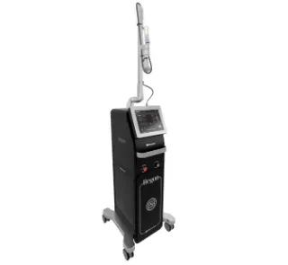
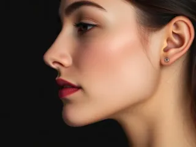
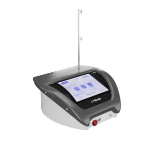
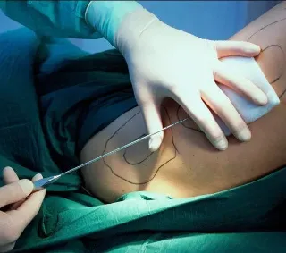
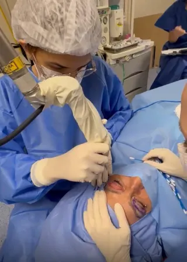
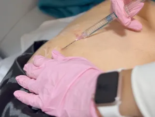

Mais procuradoLaser CO2 FracionadoManchas, cicatrizes de acne e flacidez

Harmonização FacialEquilíbrio e proporção para o rosto

EndolaserLaser sob a pele para flacidez

Mini Lipo LocalizadaMicrocânulas e recuperação rápida

BlefaroplastiaRejuvenescimento do olhar

Modelação GlúteaContorno e firmeza
Não sabe qual?Fale com a clínica e receba orientação.